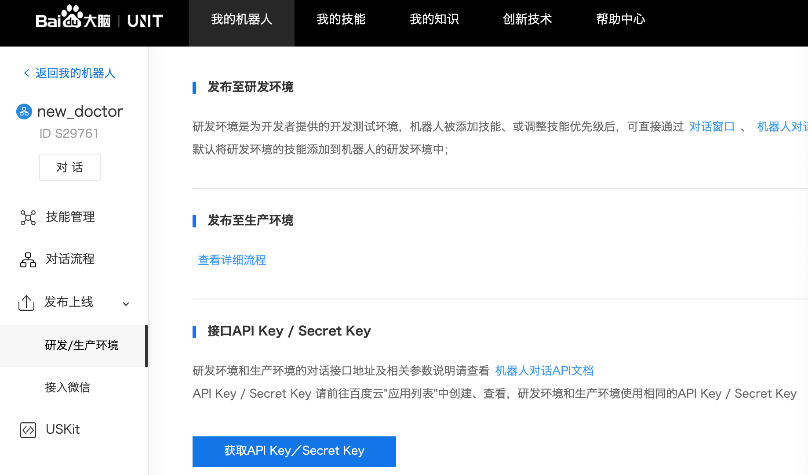
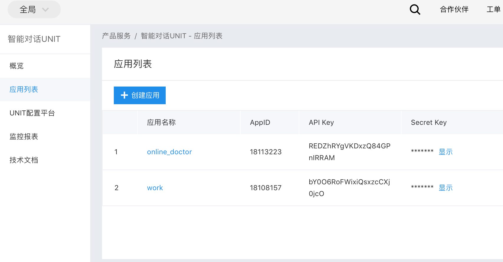
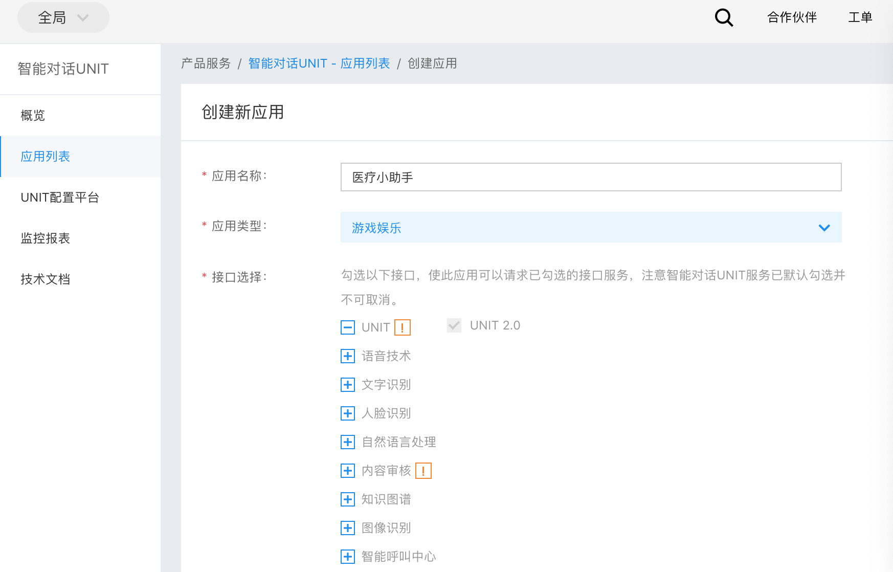
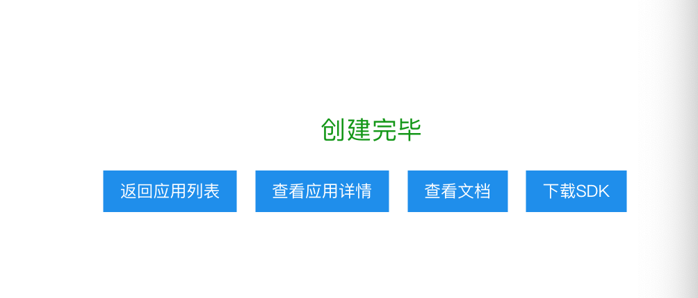
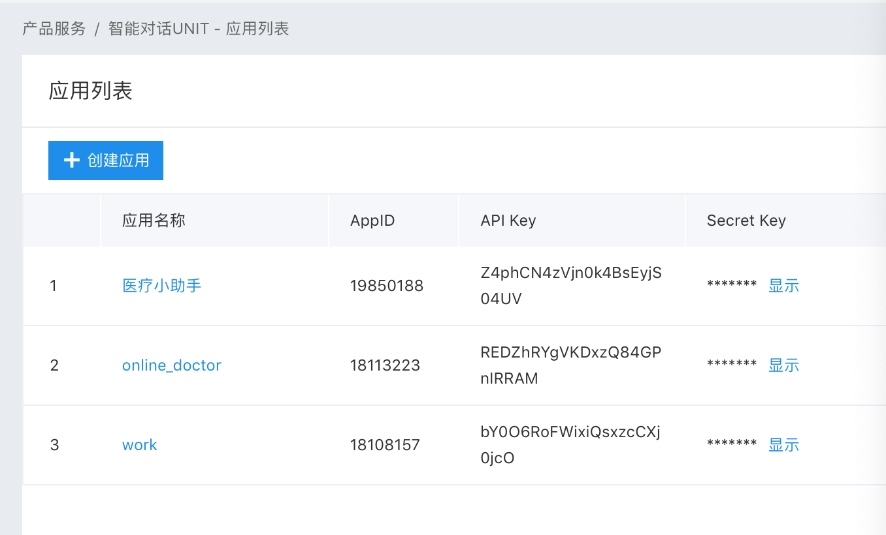

第一章:背景介绍与Unit的使用
1.1 背景介绍¶
- 学习目标:
- 了解智能对话系统的相关背景知识.
- 掌握使用Unit对话API.
- 什么是智能对话系统？
- 随着人工智能技术的发展, 聊天机器人, 语音助手等应用在生活中随处可见, 比如百度的小度, 阿里的小蜜, 微软的小冰等等. 其目的在于通过人工智能技术让机器像人类一样能够进行智能回复, 解决现实中的各种问题.
- 从处理问题的角度来区分, 智能对话系统可分为:
- 任务导向型: 完成具有明确指向性的任务, 比如预定酒店咨询, 在线问诊等等.
- 非任务导向型: 没有明确目的, 比如算算术, 播放音乐, 回答问题.
- 我们的在线医生项目就是任务导向型的智能对话系统.
1.2 Unit对话API的使用¶
- 学习目标:
- 了解Unit平台的相关知识.
- 掌握调用Unit API的实现过程.
- Unit平台的相关知识:
- Unit平台是百度大脑开放的智能对话定制与服务平台, 也是当前最大的中文领域对话开放平台之一. Unit对注册用户提供免费的对话接口服务, 比如中文闲聊API, 百科问答API, 诗句生成API等, 通过这些API我们可以感受一下智能对话的魅力, 同时它也可以作为任务导向型对话系统无法匹配用户输入时的最终选择.
- Unit闲聊API演示:
用户输入 >>> "你好" Unit回复 >>> "你好,想聊什么呢~" 用户输入 >>> "我想有一个女朋友!" Unit回复 >>> "我也是想要一个女朋友~" 用户输入 >>> "晚吃啥呢想想" Unit回复 >>> "想吃火锅"
- 调用Unit API的实现过程:
- 第一步: 注册登录百度账户, 进入Unit控制台创建自己的机器人.
- 第二步: 进行相关配置, 获得请求API接口需要的API Key与Secret Key.
- 第三步: 在服务器上编写API调用脚本并进行测试.
- 第一步: 注册登录百度账户, 进入Unit控制台创建自己的机器人.

- 第二步: 进行相关配置, 获得请求API接口需要的API Key与Secret Key.
- 点击获取API Key进入百度云应用管理页面.

- 点击创建应用, 进入应用信息表单填写页面.

- 填写完毕后, 点击立即创建, 成功后会提示创建完毕.

- 点击返回应用列表.

- 可以看到创建的API Key和Secret Key, 至此创建流程结束.

- 第三步: 在服务器上编写API调用脚本并进行测试
import json
import random
import requests
# client_id 为官网获取的AK， client_secret 为官网获取的SK
client_id = "1xhPonkmHqwolDt3GCICLX39"
client_secret = "SRYsfjMGNuW8G265paMXLEjDTjO6O4RC"
def unit_chat(chat_input, user_id="88888"):
"""
description:调用百度UNIT接口，回复聊天内容
Parameters
----------
chat_input : str
用户发送天内容
user_id : str
发起聊天用户ID，可任意定义
Return
----------
返回unit回复内容
"""
# 设置默认回复内容, 一旦接口出现异常, 回复该内容
chat_reply = "不好意思，俺们正在学习中，随后回复你。"
# 根据 client_id 与 client_secret 获取access_token
url = "https://aip.baidubce.com/oauth/2.0/token?grant_type=client_credentials&client_id=%s&client_secret=%s" % (
client_id, client_secret)
res = requests.get(url)
access_token = eval(res.text)["access_token"]
# 根据 access_token 获取聊天机器人接口数据
unit_chatbot_url = "https://aip.baidubce.com/rpc/2.0/unit/service/chat?access_token=" + access_token
# 拼装聊天接口对应请求发送数据，主要是填充 query 值
post_data = {
"log_id": str(random.random()),
"request": {
"query": chat_input,
"user_id": user_id
},
"session_id": "",
"service_id": "S23245",
"version": "2.0"
}
# 将封装好的数据作为请求内容, 发送给Unit聊天机器人接口, 并得到返回结果
res = requests.post(url=unit_chatbot_url, json=post_data)
# 获取聊天接口返回数据
unit_chat_obj = json.loads(res.content)
# print(unit_chat_obj)
# 打印返回的结果
# 判断聊天接口返回数据是否出错 error_code == 0 则表示请求正确
if unit_chat_obj["error_code"] != 0: return chat_reply
# 解析聊天接口返回数据，找到返回文本内容 result -> response_list -> schema -> intent_confidence(>0) -> action_list -> say
unit_chat_obj_result = unit_chat_obj["result"]
unit_chat_response_list = unit_chat_obj_result["response_list"]
# 随机选取一个"意图置信度"[+response_list[].schema.intent_confidence]不为0的技能作为回答
unit_chat_response_obj = random.choice(
[unit_chat_response for unit_chat_response in unit_chat_response_list if
unit_chat_response["schema"]["intent_confidence"] > 0.0])
unit_chat_response_action_list = unit_chat_response_obj["action_list"]
unit_chat_response_action_obj = random.choice(unit_chat_response_action_list)
unit_chat_response_say = unit_chat_response_action_obj["say"]
return unit_chat_response_say
if __name__ == '__main__':
while True:
chat_input = input("请输入:")
print(chat_input)
chat_reply = unit_chat(chat_input)
print("用户输入 >>>", chat_input)
print("Unit回复 >>>", chat_reply)
if chat_input == 'Q' or chat_input == 'q':
break
- 代码位置: /data/doctor_online/main_serve/unit.py
- 调用:
python unit.py
- 输出效果:
请输入:你好啊 你好啊 用户输入 >>> 你好啊 Unit回复 >>> 你也好啊~ 请输入:今天天气棒棒哒 今天天气棒棒哒 用户输入 >>> 今天天气棒棒哒 Unit回复 >>> 必须的 请输入:晚饭吃点什么? 晚饭吃点什么? 用户输入 >>> 晚饭吃点什么? Unit回复 >>> 晚饭没吃，减肥 请输入:
-
本章总结:
- 学习了智能对话系统的相关背景知识:
- 什么是智能对话系统
- 从处理问题的目的来区分, 智能对话系统的分类
- 我们的在线医生项目就是任务导向型的智能对话系统.
- 学习了Unit平台的相关知识:
- Unit平台是百度大脑开放的智能对话定制与服务平台, 也是当前最大的中文领域对话开放平台之一.
- 学习了调用Unit API的实现过程:
- 第一步: 注册登录百度账户, 进入Unit控制台创建自己的机器人.
- 第二步: 进行相关配置, 获得请求API接口需要的API Key与Secret Key.
- 第三步: 在服务器上编写API调用脚本并进行测试.
- 学习了智能对话系统的相关背景知识: